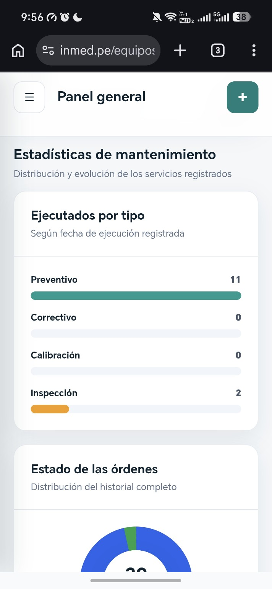
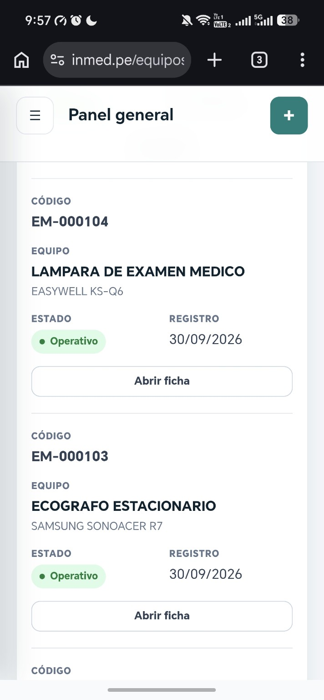
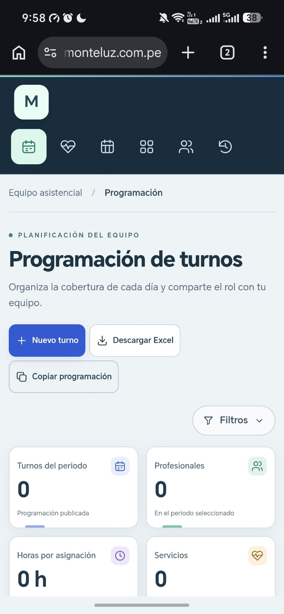
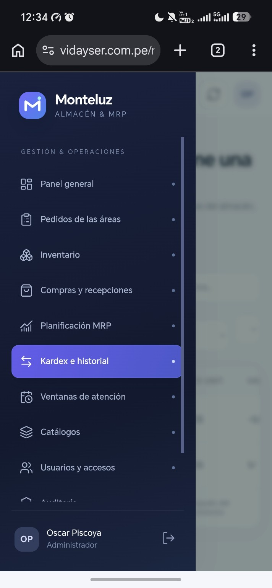

Sistemas a medida
Aplicaciones web alineadas con la operación, los roles y la información de cada organización.
INGENIERO DE SISTEMAS · DESARROLLADOR DE SOFTWARE
Diseño y desarrollo sistemas web que ordenan procesos, conectan equipos y convierten tareas cotidianas en flujos más simples.
Trabajo junto a las personas que conocen el proceso para convertir sus necesidades en herramientas útiles, seguras y fáciles de adoptar.
Desde la primera idea hasta la puesta en marcha, con atención a cada detalle que sostiene el trabajo diario.
Aplicaciones web alineadas con la operación, los roles y la información de cada organización.
Flujos entre áreas, calendarios, inventarios e información para reducir trabajo repetido.
Indicadores y reportes que ayudan a priorizar, planificar y dar seguimiento.
Productos digitales construidos alrededor de necesidades reales en salud y operaciones.
Una plataforma para registrar equipos médicos, organizar órdenes de mantenimiento y anticipar vencimientos desde un solo lugar.
Ver lo que podemos construir ↗

Programación de turnos para coordinar equipos asistenciales por día, semana y mes, con filtros y exportación.
Ver lo que podemos construir ↗
Archivo digital de ecografías e informes con búsqueda por paciente, historial y adjuntos organizados para el equipo.
Ver lo que podemos construir ↗Almacén & MRP es un producto de software desarrollado por Oscar Piscoya. Centraliza pedidos por área, inventario, compras y recepciones. El Kardex registra ingresos y despachos, incluso los parciales; las ventanas de atención se rigen por fechas y MRP proyecta provisiones según consumo.
Conocer el producto ↗
El mejor sistema empieza por entender el día a día de quienes lo van a usar.
Entender cómo fluye hoy el trabajo, dónde se traba y qué información hace falta.
Convertir el proceso en una experiencia clara, probarla con el equipo e iterar.
Acompañar la puesta en marcha y ajustar la solución a medida que evoluciona el trabajo.